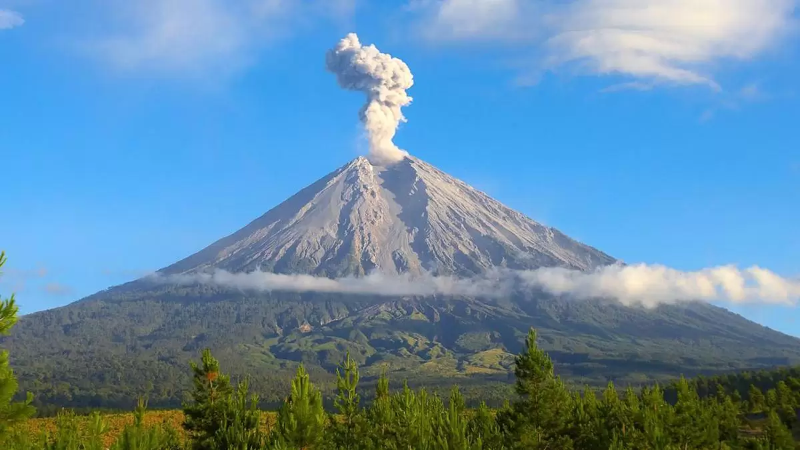
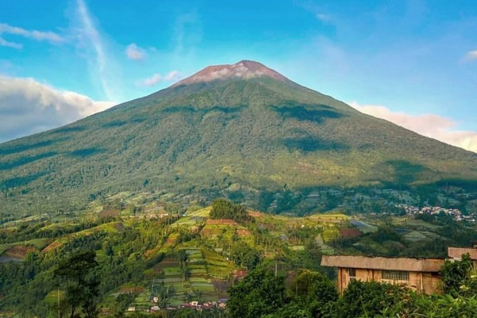
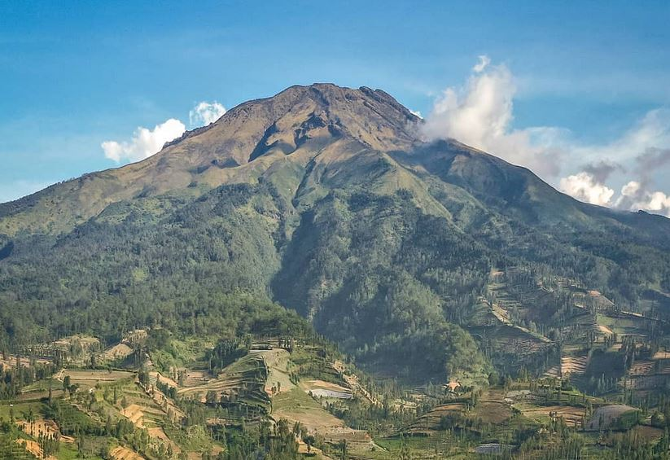
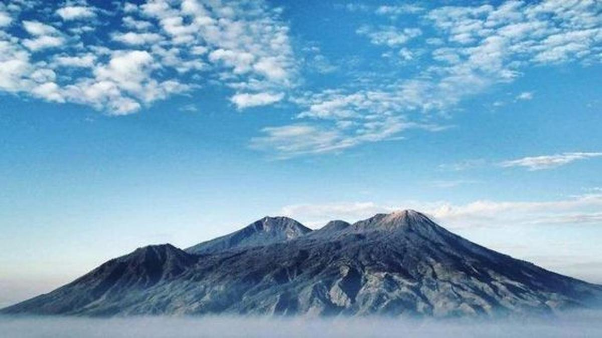
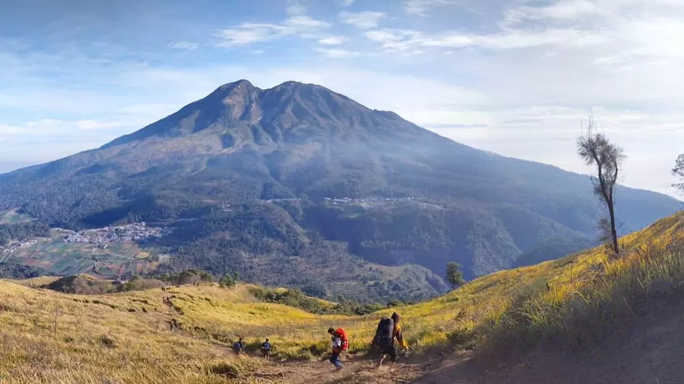

Pendahuluan
Pulau Jawa, sebagai salah satu pulau terbesar dan terpadat di Indonesia, tidak hanya dikenal dengan
kehidupan kota yang sibuk dan budayanya yang kaya. Pulau ini juga menyimpan kekayaan alam yang
menakjubkan, terutama gunung-gunung yang menjulang tinggi, menawarkan tantangan sekaligus keindahan
yang tiada duanya.
Pulau Jawa, sebagai salah satu pulau terbesar dan terpadat di Indonesia, tidak hanya dikenal dengan
kehidupan kota yang sibuk dan budayanya yang kaya. Pulau ini juga menyimpan kekayaan alam yang
menakjubkan, terutama gunung-gunung yang menjulang tinggi, menawarkan tantangan sekaligus keindahan
yang tiada duanya.
Dalam artikel ini, kita akan mengupas lima gunung tertinggi di Pulau Jawa yang tidak hanya menjadi
tujuan favorit para pendaki, tetapi juga menyimpan kekayaan alam dan budaya yang luar biasa.
Bersiaplah untuk menjelajahi keindahan alam Jawa dari puncak-puncak tertinggi yang memukau!
1. Gunung Semeru (3.676 Mdpl)

Gunung Semeru, yang dikenal sebagai Mahameru, adalah gunung tertinggi di Pulau Jawa dan menjadi
puncak tertinggi ke-3 di Indonesia. Terletak di Taman Nasional Bromo Tengger Semeru, gunung ini
menarik ribuan pendaki setiap tahun yang ingin merasakan tantangan mencapai puncak tertingginya.
Keistimewaan Semeru adalah adanya Ranu Kumbolo, sebuah danau dengan air yang jernih yang sering
menjadi tempat beristirahat bagi para pendaki. Pemandangan di sekitar danau, terutama saat matahari
terbit, membuat siapa pun terpesona. Di puncak Mahameru, pendaki akan disuguhi panorama
gunung-gunung lain di sekitarnya serta kepulan asap dari kawah Jonggring Saloka yang aktif.
Trek pendakian: Rute pendakian Gunung Semeru biasanya dimulai dari desa Ranu Pani. Pendaki akan
melewati berbagai medan, mulai dari hutan, padang rumput, hingga bebatuan. Trek yang berat di bagian
akhir menuju puncak dikenal dengan sebutan "tanah pasir", di mana pendaki harus menaklukkan medan
berpasir yang licin.
2. Gunung Slamet (3.428 Mdpl)

Gunung Slamet adalah gunung tertinggi di Jawa Tengah dan merupakan gunung berapi aktif. Gunung ini
menawarkan tantangan tersendiri bagi pendaki, dengan trek yang menanjak dan medan yang cukup berat.
Meskipun demikian, keindahan alam yang ditawarkan di sepanjang jalur pendakian membuat setiap lelah
terbayarkan.
Dari puncaknya, pendaki bisa menyaksikan panorama alam yang luas, dengan pemandangan gunung-gunung
di sekitarnya serta awan yang membentang di bawah. Namun, pendaki harus berhati-hati karena kondisi
cuaca di Gunung Slamet bisa berubah secara drastis, dengan angin kencang dan kabut tebal yang sering
tiba-tiba menyelimuti.
Trek pendakian: Jalur pendakian Gunung Slamet yang paling populer adalah melalui Bambangan di
Kabupaten Purbalingga. Pendaki akan melewati kawasan hutan lebat, padang rumput, hingga mencapai
zona bebatuan sebelum sampai di puncak.
3. Gunung Sumbing (3.371 Mdpl)

Gunung Sumbing adalah gunung tertinggi kedua di Jawa Tengah setelah Gunung Slamet. Gunung ini sering
disebut "kembaran" dengan Gunung Sindoro karena letaknya yang berdekatan. Gunung Sumbing menawarkan
trek yang cukup menantang dengan medan yang curam dan berbatu.
Pendaki yang mencapai puncak akan disambut dengan pemandangan kawah besar yang terbentuk akibat
aktivitas vulkanis masa lalu. Selain itu, dari puncaknya, pendaki dapat melihat hamparan perkebunan
tembakau di lereng-lereng gunung, yang menjadi salah satu ciri khas wilayah ini.
Trek pendakian: Salah satu jalur pendakian Gunung Sumbing yang terkenal adalah melalui Garung.
Pendaki akan melewati hutan pinus, ladang penduduk, dan vegetasi alpine sebelum akhirnya mencapai
puncak.
4. Gunung Arjuno (3.339 Mdpl)

Terletak di Jawa Timur, Gunung Arjuno adalah salah satu gunung yang populer di kalangan pendaki.
Nama Arjuno diambil dari nama tokoh wayang, Arjuna, yang dikenal sebagai pahlawan. Gunung ini
dikelilingi oleh hutan lebat dan memiliki keanekaragaman flora dan fauna yang menakjubkan.
Keindahan Gunung Arjuno tak hanya terletak pada puncaknya, tetapi juga pada situs-situs bersejarah
di sepanjang jalur pendakiannya. Di beberapa titik, pendaki akan menemukan peninggalan candi-candi
Hindu kuno yang menambah daya tarik gunung ini. Salah satu daya tarik lain adalah pemandangan indah
dari puncak Welirang, gunung tetangganya, yang juga populer sebagai tempat pendakian.
Trek pendakian: Jalur yang sering digunakan untuk mendaki Gunung Arjuno adalah melalui Tretes atau
Lawang. Masing-masing jalur memiliki karakteristik tersendiri, dengan hutan lebat dan medan yang
cukup menantang.
5. Gunung Lawu (3.265 Mdpl)

Gunung Lawu terletak di perbatasan Jawa Tengah dan Jawa Timur. Gunung ini tidak hanya dikenal karena
keindahan alamnya, tetapi juga karena nuansa spiritual yang kuat. Banyak pendaki dan peziarah yang
datang ke Gunung Lawu untuk bersemedi atau melakukan ritual-ritual tertentu, terutama di
puncak-puncaknya yang dianggap sakral.
Gunung Lawu memiliki tiga puncak utama, yaitu Hargo Dalem, Hargo Dumiling, dan Hargo Dumilah. Selain
itu, ada beberapa situs bersejarah dan mistis yang terkenal, seperti Pasar Setan, sebuah area di
mana menurut mitos setempat, pendaki bisa mendengar suara-suara pasar gaib di malam hari.
Trek pendakian: Jalur pendakian populer untuk Gunung Lawu adalah via Cemoro Sewu (Jawa Timur) dan
Cemoro Kandang (Jawa Tengah). Jalur Cemoro Sewu terkenal lebih cepat namun lebih curam, sementara
jalur Cemoro Kandang menawarkan trek yang lebih landai.
Penutup
Kelima gunung tertinggi di Pulau Jawa ini bukan hanya tantangan fisik, tetapi juga menawarkan
pengalaman spiritual dan kedekatan dengan alam. Setiap gunung memiliki karakteristik, keunikan, dan
cerita yang berbeda, membuat perjalanan mendaki menjadi pengalaman yang tak terlupakan. Baik untuk
pecinta petualangan, penjelajah alam, maupun pencari ketenangan, gunung-gunung ini memberikan
segalanya.